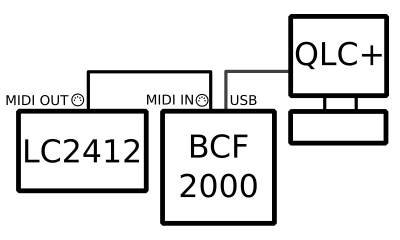

This is small howto to setup external control with Behringer LC2412 connected through BCF2000. Everything said here is also valid for BCR2000.
With this setup (BCF2000 + LC2412) we get:
That makes a pretty nice console and a much less clicks with mouse :)
How to proceed:
Connect MIDI cable from LC2412 MIDI OUT to MIDI IN on BCF2000. Connect USB cable from BCF2000 to the computer. MIDI OUT and MIDI THRU on the BCF2000 stay unused.
In this mode, two MIDI IN ports should show in the computer, and one MIDI OUT. The first MIDI IN is input from BCF, the second one is input from LC2412. MIDI OUT is sent to BCF to provide feedback (motors and LEDs).
Windows: If only one MIDI IN port is present in the computer, most probably you need to download and install USB MIDI driver for BCF from Behringer website.
Note: Do not use any of these universes for DMX input/output!